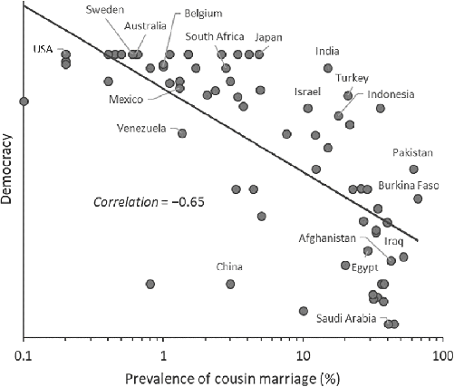

I think I can see the whole destiny of America contained in the first Puritan who landed on those shores, as that of the whole human race in the first man.
—Alexis de Tocqueville, Democracy in America (1835)1
Western law, science, democratic government, and European religions have spread around the globe over the last few centuries. Even in countries without much real democracy or broad political representation, autocratic governments now often put on a big show that involves voting, elections, political parties, and campaigns. In places where the rule of law is weak, there are still written statutes and even inspiring constitutions that look like what you find in the United States, the United Kingdom, Germany, and France. Similarly, whenever I’ve traveled to remote communities, from Amazonia to the Pacific, I’ve found small Protestant congregations reading Bibles translated into the local languages. Where did these potent formal institutions and pervasive religions come from?2
Many believe that these grand institutions, the bequests of Western civilization, represent the products of reason and the rise of rationality. These institutions—the rationalists argue—are what you get once you strip away Church dogma and apply “reason.” This is true even of Protestantism: many believed, and some continue to hold, that (some version of) Protestantism is what you get if you apply reason to the truths expressed in the Bible and toss away corrupt Church traditions. To the contrary, I would like to suggest a central role for the ongoing psychological changes wrought by cultural evolution during the Middle Ages—by the demolition of Europe’s kin-based institutions (Chapters 5–8), the expansion of impersonal markets (Chapter 9), the rise of domesticated forms of intergroup competition (Chapter 10), and the growth of a broad, mobile division of labor in urban centers (Chapter 11). The WEIRDer psychology that was emerging in fragmented communities across Europe, along with the accompanying changes in social norms, made people in these populations more likely to devise, endorse, and adopt particular kinds of ideas, laws, rules, policies, beliefs, practices, and arguments. Many modern ideas about law, government, science, philosophy, art, and religion that would have been “unthinkable,” aversive, or nonintuitive to people in most complex societies over most of human history began to “fit” the emerging proto-WEIRD psychology in medieval and Early Modern Europe. In many cases, these new ideas, laws, and policies were filtered and selected by relentless intergroup competition between voluntary associations, including among cities, guilds, universities, monasteries, scientific associations, and eventually territorial states.3
Mapping the myriad connections and interactions between these societal developments and people’s changing perceptions, motivations, worldviews, and decision biases could easily fill volumes. My goal here, however, is more modest. I want to illustrate how an increasingly WEIRD psychology likely midwifed a few of the quintessentially Western formal institutions that came to dominate the legal, political, scientific, and religious domains of life in the latter half of the second millennium.4
To warm up, let’s consider four aspects of WEIRD psychology that likely had broad influences on the formal institutions built in Europe during the second millennium of the Common Era.
These and related aspects of psychology were taking hold in small but influential populations scattered across western Europe by the High Middle Ages. Throughout this book, I’ve occasionally pointed out the effects of this proto-WEIRD psychology on the creation of new formal institutions, but let’s consolidate those ideas here, starting with law and government.
The gradual emergence of a WEIRDer psychology during the High Middle Ages, especially in the Church and free cities, meant that the ideas underpinning Western notions of government and law became “easier to think” and gradually more intuitive. At the same time, the dissolution of intensive kinship and the evaporation of tribal affiliations made it easier to implement laws governing individuals and to develop well-functioning representative assemblies. This change didn’t start with fancy intellectuals, philosophers, or theologians positing grand theories of “democracy,” the “rule of law,” or “human rights.” Instead, the ideas formed slowly, piece by piece, as regular Joes with more individualistic psychologies—be they monks, merchants, or artisans—began to form competing voluntary associations. Organizations had to decide how to govern themselves in ways that were both acceptable to current members and capable of attracting new members in competition with other organizations. Through a grinding process of myopic groping—not an intellectual epiphany rooted in some abstract rationality—a growing repertoire of social norms and organizational practices were cobbled together, exscribed into charters, and formulated into written laws. Lex mercatoria, for example, evolved into commercial law.
Consider the notion of individual rights or natural rights, which today provides the foundation for important statements like the Universal Declaration of Human Rights, adopted by the UN General Assembly in 1948. As we’ve already seen, medieval cities and towns competed for members by offering an expanding set of privileges for citizens that were formalized and assembled in urban charters. Urban centers with charters that attracted more members—presumably by offering people what they wanted while at the same time generating economic prosperity—were copied, amended, and recombined. Over time, urban charters increasingly offered legal protections (forms of “due process”), tax exemptions, property rights, mutual insurance, and freedom from conscription (by local rulers). A rising middle class of urbanites pushed rulers by demanding more rights, freedoms, and privileges. Persuaded by rising revenues and greater credit availability, princes, dukes, and other rulers often yielded to these demands.5
By 1200, deploying the ideas and concepts already in circulation, Church lawyers—the canonists—began to formally develop the notion of natural rights. These ideas soon infiltrated the universities, which were spreading rapidly during this period (Figure 10.6B). Over the course of centuries, these notions slowly trickled up to state-level governments. For example, in 1628 and 1689, the English Parliament passed the Petition of Right and the Bill of Rights, respectively. Both asserted the rights of individuals and Parliament over the monarch. The Petition of Right anticipates 4 of the 10 amendments in the U.S. Bill of Rights.6
We can infer how and why these ideas about individual rights emerged when they did by considering how people’s psychology was changing. How would the residentially mobile individuals who were flocking to urban centers in various regions of medieval Europe have thought about law? Freed from the security of kin bonds and compelled to navigate a world of impersonal markets, competing organizations, and growing occupational specializations, they would have increasingly focused on their own attributes, intentions, and dispositions. With a newly analytic orientation, they would have tried to explain and justify rules and laws by referencing people’s internal properties, not their relationships or lineages. When necessary, they would have concocted invisible properties like “rights” to organize laws rather than making up laws rationalized by the need to harmonize existing (inherited) relationships.
In contrast to these individual-centered legal developments in medieval Europe, punishments for crimes in China during the same era depended on the relationship between the individuals involved. In general, crimes committed against kin were punished more severely than those against nonrelatives, although elders could commit crimes against junior kin with lesser penalties than vice versa. In fact, even into the 20th century, Chinese fathers could murder their sons and receive only a warning, while a son who harmed his father or older brother faced much stiffer penalties. While such asymmetries can be justified on Confucian principles and by appealing to a deep respect for elders, this doesn’t sit well in the WEIRD mind. We can understand it, but it doesn’t strike most of us as a good argument in favor of a relational approach to law.7
Now let’s come at this from the other direction. The Declaration of Independence asserts, “We hold these truths to be self-evident, that all men are created equal, that they are endowed by their creator with certain unalienable rights, that among these are life, liberty, and the pursuit of happiness.” If the idea that people are endowed with such abstract properties makes sense to you, then you are at least a little WEIRD. Claims about “unalienable rights” seem self-evident if one (a) tends to analytically explain or justify things with reference to internal and enduring attributes (not relationships or descent) and (b) prefers impartial rules that apply broadly to distinct categories or classes (e.g., “landowner”; “human”). By contrast, from the perspective of most human communities, the notion that each person has inherent rights or privileges disconnected from their social relationships or heritage is not self-evident. And from a scientific perspective, no “rights” have yet been detected hiding in our DNA or elsewhere. This idea sells because it appeals to a particular cultural psychology.8
Along with the development of individual rights, the canonists also started hashing out legal notions related to the role of mental states in criminal liability. Roman law as well as other early legal systems had taken some account of people’s mental states in assessing criminal liability, usually by distinguishing intentional from accidental killings. But, Western law in the second millennium placed a large and growing emphasis on mental states. The medieval historian Brian Tierney writes,
The concern with individual intention, individual consent, [and] individual will that characterized twelfth-century culture spilled over into many areas of canon law. In marriage law, by the end of the twelfth century, the simple consent of two parties, without any other formalities, could constitute a valid, sacramental marriage. In contract law, a bare promise could create a binding obligation—it was the intention of the promisor that counted. In criminal law, the degree of guilt and punishment was again related to the intention of the individual defendant, and this led on, as in modern legal systems, to complex considerations about negligence and diminished responsibility, areas of law that we nowadays think of as mediating between the rights of individuals and the maintenance of public order.9
In determining a person’s criminal culpability, the canonists minutely dissected a perpetrator’s beliefs, motives, and intentions. Consider this case: a blacksmith throws a hammer at his assistant and kills him. Medieval lawyers began asking not only if the smith wanted to kill his assistant (motive: the dead man had flirted with the blacksmith’s wife) but also whether the smith intended to kill his assistant and believed the hammer would do the job. Does it matter if the blacksmith had intended to kill his assistant next week (using poison) but accidently killed him early with the hammer, thinking he was an intruder breaking in? They decided that the smith’s culpability varied depending on which of several distinct mental states existed. In analyzing these mental states, the canonists suggested that criminal liability for murder and battery could be mitigated if people had acted in self-defense or were incapable of understanding what they were doing because they were young, confused, or mentally incapacitated. Unlike their Roman predecessors, whose chief goal was to enforce policies and protect important interests (e.g., property), the canonists were obsessed with the mental state of the accused. This focus on mental states meant that, contrary to laws and customs from early medieval Europe to premodern China, relatives couldn’t justifiably share a perpetrator’s guilt, responsibility, or punishment if they lacked the mental state necessary for culpability.10
These legal developments connect with psychological work discussed in earlier chapters. In addition to studying the impact of intentions on people’s judgments of norm-violators in small-scale societies, Clark Barrett’s anthropological team also studied how various “mitigating factors” might alter the inferences that people make about a perpetrator’s mental state and thereby influence their judgment of culpability for a violent attack such as battery (punching someone in the face). Holding constant both the act itself (the punch) and the outcome (a bloody nose), the team explored five mitigating factors: the perpetrator (1) was acting in self-defense, (2) held an inaccurate belief about the situation, (3) possessed moral commitments distinct from those of the community he’d just arrived in, (4) was insane, or (5) acted out of necessity. In the second condition (inaccurate belief), the perpetrator believed that he was intervening to stop an attack, but in reality the “fighters” were just playing around. For the third condition, involving moral commitments, the perpetrator was from a society where it was considered proper, even respectable, to beat up wimpy-looking young men to toughen them up. In the last condition (necessity), the perpetrator needed to get to a bucket of water to put out a dangerous fire, but in the loud and crowded room he couldn’t get to it quickly enough without dispatching an implacable guy in his path.
In all 10 of the populations studied, both self-defense and necessity were important mitigating factors—so, no one totally ignores mental states. But, in some societies, this was the only relevant distinction: perpetrators received no leniency for mistaken beliefs or insanity. At the other extreme, WEIRD people in Los Angeles finely distinguished the perpetrator’s “badness” and the punishment he should receive based on all of these mitigating factors. Self-defense and necessity evoked the greatest leniency, respectively, followed by a mistaken belief and then insanity. Interestingly, different moral beliefs actually led WEIRD people to judge the perpetrator more harshly—intentionally punching someone and believing you are doing good seems to be worse than intentionally punching someone but thinking you are doing wrong. Across all 10 populations, the less intensive the kin-based institutions of a society, the more frequently people attended to the nuances of the perpetrator’s mental states across our five mitigating factors.11
While the primacy of the individual—their rights and mental states—illuminates core trends in the development of the Western legal tradition, something even deeper was going on with law in the High Middle Ages. In his magisterial work Law and Revolution, the legal scholar and historian Harold Berman argues that as the 12th-century canonists were studying ancient Roman law—the Justinian Code—they saw something that wasn’t really there. Assembled during the sixth century in the Eastern Empire, the Justinian Code is an immense compilation of law running thousands of pages. It includes a dizzying array of statutes, cases, and legal commentaries. Medieval jurists, with their analytical inclinations and Christian-derived moral universalism, naturally assumed that the specific laws and actual decisions were rooted in some set of universal legal principles, categories, or axioms from which all specifics could be derived. Thus, they went about the task of trying to back out general laws and principles from these specific Roman instantiations and cases. However, Berman convincingly argues that Roman legal tradition didn’t have such fundamental principles or well-developed legal concepts. He writes,
Indeed, Roman law from early times was permeated by such concepts as ownership, possession, delict, fraud, theft, and dozens of others. That was its great virtue. However, these concepts were not treated as ideas which pervaded the rules and determined their applicability. They were not considered philosophically. The concepts of Roman law, like its numerous legal rules, were tied to specific types of situations. Roman law consisted of an intricate network of rules; yet these were not presented as an intellectual system but rather as an elaborate mosaic of practical solutions to specific legal problems. Thus one may say that although there were concepts in Roman law, there was no concept of a concept.12
Roman legal scholars had striven for consistency in the application of their laws, not for unifications and syntheses rooted in a set of fundamental principles, axioms, or rights. By contrast, as analytical thinkers from a moralizing religion, the canonists went looking for the universalizing principles.13
Since analytical thinkers hate contradictions, much of the development of Western law has been about ferreting out and resolving the contradictions that emerge when one tries to isolate a set of principles and apply them more broadly. The rights of one individual can conflict with the rights of another or the good of the group. If one is more holistically inclined, contradictions are neither especially salient nor bothersome. Since no two real situations are ever precisely identical, always varying in their specific contexts and the personal relationships involved, who’s to even say that two legal decisions stand in contradiction? Moreover, in many societies, law is about restoring harmony and maintaining the peace, not, as it is for more analytical thinkers, about defending individual rights or making sure that abstract principles of “justice” are served.14
Medieval lawyers thought they were deducing or inferring divine or universal laws—God’s laws. They believed that these laws existed (out there, somewhere), so scholars just had to figure them out. This meant that, unlike their predecessors in Germanic or Roman law, medieval rulers were subject to their own laws. The important laws descended from an authority higher than any emperor, king, or prince. This approach, which became increasingly intuitive for Christians with a proto-WEIRD psychology, was crucial to the development of both the constraints on executive power—constitutional government—and notions of the rule of law.15
Later, following their brethren in the legal realm, natural philosophers sought laws to explain the physical world. Like the canonists, these scientists believed that there were indeed hidden (divine) laws governing the universe that could be uncovered. As psychological universalists, many believed that if two different models or sets of principles purported to explain some physical phenomenon, they couldn’t both be right—the universe is either one way or it’s another. As analytical thinkers, they often sought to break complex systems down into their constituent parts—elements, molecules, planets, genes, etc.—and explain their action by reference to internal (and often invisible) properties like mass, charge, gravity, and geometry. As individualists and nonconformists, they would be motivated to show off their genius, creativity, and independence of mind, if only to their friends and peers.
Consider the case of Nicolaus Copernicus, who, in 1514, after receiving his doctorate in canon law, developed a model of the solar system that placed the sun at the center with the planets in orbit—the heliocentric model (published in 1543). To understand Copernicus’s contribution, let’s consider two background points. First, Islamic astronomers were ahead of their European counterparts until at least the 14th century. In fact, it appears that these scholars, who were working from Ptolemy’s ancient model, had figured out most of the major components of Copernicus’s model well before he did. In the 13th century, for example, Ibn al-Shatir (a religious timekeeper in Damascus) had produced a mathematical model that was formally identical to that of Copernicus except that it remained earth-centered. But, brilliant as they were, these thinkers never made Copernicus’s conceptual breakthrough. Second, while Copernicus got the relative position of the sun correct, he assumed that the planets were in circular orbits. This mistake meant that al-Shatir’s model still made better predictions. Nevertheless, the Copernican model was published, faced off against competing models, and inspired subsequent work. Johannes Kepler, building on Copernicus’s sun-centered model, explored using elliptical orbits for the planets, and his model solidly beat all prior efforts. Naturally, Kepler believed that he’d discovered some of God’s divine laws for the cosmos. So, what was Copernicus’s big contribution?16
It seems to me that it was his willingness to go out on a limb, bucking fundamental Greek and Christian worldviews by putting the sun at the center and making Earth just another planet. By disregarding authority and challenging the ancient sages, he got the idea out there for others to consider and build on. He also persevered despite the fact that the empirical evidence supporting his model wasn’t particularly strong—it’s a good thing he was overconfident. Perhaps more important than Copernicus himself, however, was the relative openness of the social world that he lived in. Some scholars criticized his ideas while others lauded them. The Church, for its part, didn’t seriously object to his ideas for seven decades, when Galileo pushed the issue. Of course, we don’t have psychological data on individual scientists or their communities, but the case nevertheless illustrates how the kinds of psychological differences I’ve been laying out through this book would have shaped scientific insights, institutions, and discourse.
As Copernicus was banishing Earth from its role at center stage, the impact of a WEIRDer psychology had begun to manifest in a variety of ways. Let’s consider two of these. First, with their growing willingness to break with tradition, the intellectuals of the early modern period started to realize that the great ancient sages, like Aristotle, could be wrong; in fact, they were wrong about a great many things. This meant that individuals could discover entirely new knowledge—things no one ever knew. The historian David Wootton argues that the very notion of “discovery” as a conscious activity emerged during this period, marked by the diffusion of words for “discovery” across European languages—variants of “discovery” first appear in 1484 (Portuguese) and 1504 (Italian); then later, in the titles of books, in 1524 (Dutch), 1553 (French), 1554 (Spanish), and 1563 (English).
Second, with an increased focus on mental states, intellectuals began to associate new ideas, concepts, and insights with particular individuals, and to credit the first founders, observers, or inventors whenever possible. Our commonsensical inclination to associate inventions with their inventors has been historically and cross-culturally rare. This shift has been marked by the growth of eponymy in the naming of new lands (“America”), scientific laws (“Boyle’s Law”), ways of thinking (“Newtonian”), anatomical parts (“fallopian tubes”), and much more. After about 1600, Europeans even began to relabel ancient insights and inventions based on their purported founders or discoverers. “Pythagoras’s theorem,” for example, had been called the “Dulcarnon” (a word derived from an Arabic phrase for “two-horned,” which described Pythagoras’s accompanying diagram). Finally, well before any patent laws, people began adopting the notion that it was wrong to copy and promulgate others’ manuscripts, mathematical proofs, or even ideas without giving them credit. People came to think that novel mental states—ideas, concepts, equations, and recipes—were somehow linked to, or “owned” by, the first person to publicly claim them. As intuitive as such ownership might seem to us, it runs counter to customary practices that stretch back into antiquity. The notion that something as immaterial as an idea, song, or concept could be individually owned began to make intuitive sense. Marking this in English, words for “plagiarism” first began to spread in the 16th century, following the introduction in 1598 of the word “plagiary,” which derives from the Latin word for kidnapping.17
My point: a WEIRDer psychology in some preindustrial European populations favored the development and spread of certain kinds of laws, norms, and principles, including those dealing with both human relations and the physical world. Of course, as both Western law and science began to emerge, they in turn further shaped aspects of WEIRD psychology. Perhaps the easiest place to see the impact of the new legal reforms is in studies of the psychological effects of democratic institutions. Similarly, the influence of science has been considerable. But, as you’ll see, scientists may have had their biggest impact on our epistemic norms, by shaping what counts as good evidence or valid reasons.
Elements of participatory and representative governance began diffusing during the High Middle Ages. Elections were increasingly used by voluntary organizations to select leaders and make decisions. We saw, for example, that Cistercian monks in the 11th century began electing their abbots from among the membership. At the same time, representative assemblies formed in some urban communities as guilds and other associations vied for power. Members of these assemblies, rather than representing neighborhoods, often represented guilds or religious organizations within the community. In some cities, the governing councils were simply merchant oligarchies. But elsewhere, the franchise was expanding to include members of a growing number of associations, who increasingly asserted their “right” to representation. Alone, individuals were virtually powerless to assert their rights, but when they banded together in groups with shared interests, they could exert real influence. Since cities, guilds, universities, and monastic orders competed for members, those with the most appealing forms of government tended to grow the fastest and attract the psychologically WEIRDest people.18
These social and political changes were supported by early developments in canon law, which laid the foundations for modern corporate law. Canon law asserted that appointed leaders or representatives of corporations (voluntary associations) had to obtain the consent of their membership before taking important actions. This idea evolved into a constitutional principle summarized in the Roman maxim “What concerns everyone ought to be considered and approved by everyone.” Medieval European legalists, however, arrived at new principles by unwittingly reinterpreting what they thought they saw in Roman law. The Roman Empire certainly didn’t think it needed the consent of the governed—the quotation was context- and case-specific. However, filtered through a proto-WEIRD psychological prism, this maxim starts to sound like common sense, almost a self-evident truth. Since university-trained lawyers were well grounded in canon law, these and other aspects of Church law provided the point of departure for subsequent developments in corporate law and constitutional government throughout Europe and beyond.19
The door to formal democratic practices and ideas opened in the High Middle Ages for both social and psychological reasons. Socially, practices like voting or consensus building don’t function particularly well when perched atop strong kin-based institutions. To see why, consider this description by the Afghan-born author Tamim Ansary:
But I keep remembering the elections held in Afghanistan after the Taliban had fled the country. Across the nation, people chose delegates to represent them at a national meeting organized by the United States to forge a new democratic government, complete with parliament, constitution, president, and cabinet … I met a man who said he had voted in the elections … he looked like the traditional rural villagers I had known in my youth, with the standard long shirt, baggy pants, turban, and beard, so I asked him to describe the voting process for me—what was the actual activity?
“Well, sir,” he said, “a couple of city men came around with slips of paper and went on and on about how we were supposed to make marks on them, and we listened politely, because they had come a long way and we didn’t want to be rude, but we didn’t need those city fellows to tell us who our man was. We made the marks they wanted, but we always knew who would be representing us—Agha-i-Sayyaf, of course.”
“And how did you settle on Sayyaf?” I asked.
“Settle on him? Sir! What do you mean? His family has lived here since the days of Dost Mohammed Khan and longer … Did you know that my sister’s husband has a cousin who is married to Sayyaf’s sister-in-law? He’s one of our own.”20
The strong in-group loyalty reflected in this passage meant that the only candidate the Afghan men would consider voting for was one of their own, at which point they traced a link to him through a long series of kin ties: “my sister’s husband has a cousin who is married to Sayyaf’s sister-in-law.” This influence means that elections are largely determined by the size of the different voting blocs. Bigger clans, tribes, or ethnic groups generally win—sometimes even turning into political parties—and people can’t easily switch teams. The dissolution of intensive kinship and tribal organizations in medieval Europe meant that democratic practices had a better shot at working. Similarly, group discussions or debates over new policies aren’t very productive if everyone just agrees with the head of their clan or those who share their ethnic markers or religion.21
Psychologically, participatory governing practices would have appealed to people in a couple of ways. More individualistic and independent people like to distinguish themselves by expressing their opinions, and often don’t mind going against the grain. A group debate or public vote gives individuals a way to set themselves apart from others, to express their uniqueness and sense of personal identity. This contrasts with psychological inclinations that favor peer conformity, deference to elders, shame-avoidance, and respect for traditional authorities. Boldly disagreeing with the group opinion or pointing out the flaws in ancient wisdom has not been a way to impress others in most complex societies.
Relatedly, another aspect of the individualism complex is a preference for choice or control. WEIRD people prefer the things they themselves pick and work harder on tasks they’ve chosen than on identical tasks assigned by an authority. By contrast, less individualistic populations are not particularly inspired by opportunities to make their own choices or to take control.22
These psychological patterns, and specifically people’s inclination to buck authority and their desire for choice, influence what researchers call the democracy premium. Both laboratory and field experiments suggest that some populations will contribute more to the group and stick more strictly to the group’s rules when they have had a say—typically a vote—in decision-making. As usual, laboratory research on this has been based almost exclusively on WEIRD people; however, a couple of recent studies failed to find a democracy premium in Mongolia and China. In rural China, men contributed the most in an experimental Public Goods Game when a “law” was externally imposed on them, not when they voted for it. Psychologically, those with stronger inclinations to defer to authority and less desire for control cooperated more in response to externally imposed laws and less with the results of democratic votes. Only when these psychological tendencies are sufficiently weak in a large fraction of the population does the democracy premium emerge. It’s an emergent piece of cultural psychology.23
This evidence suggests not only that medieval Europeans would have been more socially and psychologically susceptible to formal democratic institutions, but that democratic institutions would have actually worked better by inspiring those with a proto-WEIRD psychology to contribute more to the group and follow the rules. I also suspect that the changing psychological substrate influenced what people saw as an acceptable source of legitimacy in government. Like most sovereigns over the course of human history, medieval European rulers had found their source of legitimacy in some combination of divine mandates and the specialness of their lineage. Gradually, however, especially after 1500, individuals began to see “the people” or “the governed” as a potential source of legitimacy—not gods, descent, or some mix of these. This argument, which connects intensive kin-based institutions through psychology to democratic institutions, hinges on contemporary research, much of it done in university laboratories. Is there a way to make these connections in the real world and link them back into history?
We can tackle this in three ways. First, in the modern world, if we look at the adult children of immigrants to Europe—as we did with impersonal trust, individualism, and conformity in Chapter 7—we find that individuals whose origins can be traced to societies with more intensive kinship engage in less political activity: they vote less, sign fewer petitions, support fewer boycotts, and attend fewer demonstrations. Remember, although their parents migrated from other countries, these individuals all grew up in the same European countries. Despite that, individuals with cultural backgrounds involving less intensive kinship are more engaged politically, an effect that holds even after the influence of age, sex, religion, income, employment status, and any feelings of discrimination (among many other factors) are statistically held constant. These findings suggest that intensive kinship—operating through cultural transmission—psychologically inhibits participatory governance, political pluralism, and the quality of democratic institutions. Similarly, if we again zoom in on Italy, we find that the higher the rate of cousin marriage in an Italian province during the 20th century, the lower the voter turnout in the 21st century.24
Second, recall from Chapter 9 that the longer a city was exposed to the Church’s Marriage and Family Program through proximity to a bishopric, the more likely that city was to develop a representative form of government (Figure 9.6). So, exposure to the MFP did indeed cash out in more participatory governance and less autocracy. Tellingly, the probability of adopting participatory or representative forms of government in the Islamic world or in China during the same era was zero—it was “unthinkable.”25
Finally, when comparing countries, we see similar relationships between intensive kinship and democracy. Countries with more intensive kinship have governments deemed less democratic in international rankings. In fact, knowing the historical rate of cousin marriage in a country allows us to account for about half of the total variation in the quality of national-level democratic institutions (Figure 12.1). When intensive kin-based institutions persist, national-level democratic institutions flounder.26
Taken together, these lines of evidence support the notion that the Church, by dissolving intensive kinship and shifting people’s psychology, opened the way for the slow expansion of political pluralism and modern democracy.27
To be clear, this is not one-way causation. Psychology, norms, and formal institutions interact in a kind of feedback loop. The emergence of particular psychological patterns within a population can prepare the way for new formal institutions, including laws, democracy, and representative governments; at the same time, the creation of new formal institutions—fitted to a population’s psychology and social norms—can then catalyze further psychological shifts. To see this, let’s consider the long-term psychological effects of adopting formal democratic institutions during the preindustrial era.
Beginning in the 13th century, the region that became modern Switzerland was developing a kaleidoscope of towns and cities. Some of these urban areas began adopting forms of participatory governance, while others remained under the autocratic rule of hereditary nobles. This patchy mixture of democracy and autocracy continued until Napoleon conquered the region, in 1803, and granted all communities the right to self-government, at which point democracy prevailed.

Spotting this natural experiment, the economists Marcella Veronesi and Devesh Rustagi administered a two-person Public Goods Game to 262 people drawn from 174 communities around Switzerland. This one-shot experiment was the same one that Devesh had deployed among the Oromo in Ethiopia to study market integration (Chapter 9). In this experiment, individuals are asked how much they will contribute for each of the possible amounts that their partner might contribute (if their partner goes first), and these decisions are binding. This method allows researchers to assess people’s inclinations for conditional cooperation with strangers by assigning each participant a score from -100 to 100 based on how positively or negatively they respond to others’ contributions. The average score for this Swiss sample is 65. To assess when different Swiss communities first established democratic or participatory formal institutions, the economics duo dug into the historical data. Since all Swiss communities became democratic in some way after Napoleon’s arrival, they calculated how long each community had been under some form of democratic or participatory governance prior to 1803 CE.
The analysis shows that people from Swiss communities with a longer history of participatory governance are more conditionally cooperative with strangers today. In fact, for each additional century of exposure to democratic government, a contemporary person’s inclination for conditional cooperation increases by nearly nine points. Since the average is 65, nine points is a big effect. Expressed differently, comparing communities that had participatory governance before Napoleon arrived with those who only developed it after, the results show that individuals from the “pre-Napoleon democracies” (scoring 83) are roughly twice as conditionally cooperative as those from “post-Napoleon democracies” (scoring only 42).
Of course, maybe there’s something special about the communities that adopted democratic forms of government early, something that both caused the precocious political developments and explains the contemporary psychological differences. This isn’t a true experiment, because we didn’t get to randomly assign “democracy” to some communities but not others.
To tackle this concern, Marcella and Devesh took advantage of a random political shock. In 1218, Duke Berthold suddenly died without heirs, bringing the Zähringen dynasty to an abrupt, peaceful, and unexpected end. The cities and towns within the former Zähringen realm were freed to develop their own forms of governance, and many developed participatory or representative institutions. Meanwhile, the other surrounding dynasties didn’t suddenly end, so their communities had to wait for later opportunities, and some had to wait for Napoleon. The duke’s death without heirs provides the randomness we need. Knowing about this historical shock allows us to “pull out”—with some statistical razzle-dazzle—just the variation in historical democratic governance that we know is effectively random and see if it alone can explain contemporary conditional cooperation with strangers.
Sure enough, the analysis confirms that each additional century of democratic governance causes the modern Swiss to increase their conditional cooperation by nearly nine percentile points, roughly the same as in the full analysis above. It seems that formal democratic institutions do indeed make their populations more conditionally cooperative, at least in Switzerland.29
My point: an increasingly WEIRD psychology fostered the development of more democratic and participatory forms of governance, and, once established, these formal institutions pushed WEIRD psychology further along, at least in some dimensions, perhaps by further reducing the value of extended families and dense relational networks while encouraging impersonal commerce and greater competition among voluntary associations.30
Protestantism is a family of religious faiths that place individuals’ personal commitments and their relationship with the divine at the core of spiritual life. Fancy rituals, immense cathedrals, big sacrifices, and ordained priests typically play little role and may be openly condemned. Individuals, through the power of their own choices, build a personal relationship directly with God, in part by reading and pondering holy scripture on their own or in small groups. To connect with God, adherents needn’t defer to their ancestors, great sages, a religious hierarchy, or Church traditions. In principle, the only thing Protestants defer to is scripture. In many denominations, anyone can become a religious leader and no special training is required. These leaders are formally equal with their congregations, though of course their prestige may permit certain privileges. Salvation—a contingent afterlife—is generally achieved based on people’s own internal mental states—their faith. Rituals and good deeds play little or no role. Intentions and beliefs, or what’s in a person’s heart, are most important. Thinking about murder, theft, or adultery is often a sin in and of itself. Leading denominations also emphasize that all people have a calling—a freely chosen occupation or vocation—that uniquely fits their special attributes and endowments. Working hard to successfully pursue one’s calling with diligence, patience, and self-discipline is doing God’s work. Sometimes this helps individuals get to heaven, but other times it just publicly marks them as one of the chosen.31
Ring any bells? I’m hoping this description resonates with the psychological patterns we’ve been stacking up and explaining throughout this book: individualism, independence, nonrelational morality, impersonal prosociality (equality of strangers), nonconformity, resistance to tradition, guilt over shame, hard work, self-regulation, the centrality of mental states in moral judgments, and the molding of one’s disposition to a chosen occupation.
What Protestantism did in the 16th century was to sacralize the psychological complex that had been percolating in Europe during the centuries leading up to the Reformation. The case I’ve made is that many populations had already developed an individualistic psychology that embodied—if only in inchoate forms—the psychological core of the 16th-century religious movements that made up Protestantism. Martin Luther himself was an Augustinian monk employed at a university in the charter town of Wittenberg (that’s three voluntary associations). Protestant faiths spread so rapidly, in part, because their core religious values and ways of seeing the world meshed with the era’s proto-WEIRD psychology. Of course, there were lots of political and economic reasons why various kings, dukes, and princes leapt into this bandwagon—e.g., the Church owned tons of land that these rulers could confiscate. But, rulers got away with this in part because Protestant faiths resonated deeply with important swaths of the populace. In other words, the processes I’ve been describing throughout this book—the emergence of nuclear families, impersonal markets, and competing voluntary associations—had tilled the psychological fields of Europe for the seeds of the Reformation.32
Of course, the Protestant Reformation wasn’t a bolt from the blue, nor is it best understood as a single movement or event. Instead, it represents a cultural evolutionary process in which like-minded individuals were developing diverse religious organizations, each with its own supernatural beliefs, rituals, and practices. Some of these religious packages fit better with the emerging psychological patterns than those found within the mainline Roman Catholic Church. Many harbingers of the Reformation had appeared during the Middle Ages. For example, observers going back to at least Max Weber have noticed the similarity between Protestantism and the Cistercian Order (1089). Later, in the 14th century, John Wycliffe in England argued that Christians should read the scripture for themselves rather than relying on popes and priests. As Luther would do over a century later, he translated the Bible into the local language—Middle English. Like Luther and his contemporaries, Wycliffe revered Augustine and inveighed against both the papal hierarchy and indulgences. Though they were snuffed out before taking root, religious movements like Wycliffe’s were more compatible with the proto-WEIRD psychology developing in many European populations than were their Catholic competitors. By understanding that Protestantism was in part a response to the changing psychological landscape, we can understand not only why it emerged and spread but also why it tended to be so individualistic, disciplined, egalitarian, self-focused, faith-oriented, and mentalistic.33
In contrast to many Protestant sects, the Church itself was—perhaps ironically—built on a patriarchal (Roman) family model. Authority is vertical and strict, as in a patrilineage. Religious elders, who came to be called “father” or “papa” (pope), possessed privileged access to divine truths and special powers, including the power to grant (channel) God’s forgiveness. Endowed with wisdom and holiness, Church leaders should be revered and obeyed. Only through the Church, and its specialized rites and elite practitioners, can an average person find a path to God and the afterlife. There are no unmediated personal relationships with God.34
Of course, faced with competition from various Protestant denominations, the Church evolved over time in ways that made it more compatible with WEIRD psychology, especially in certain corners like the Jesuit Order. These reforms, however, could only go so far, since the Church undermines its eternal authority every time it changes the rules for admission to heaven. Prior to the Reformation, without much competition for adherents, the Church hadn’t been adapting to the changing psychology of the faithful.
Is Protestantism, like democratic governance, also a two-way psychological street? Did the institutions and beliefs developed by these proliferating religious communities foster subsequent psychological changes? Did Protestantism—or at least some Protestant denominations—catalyze downstream effects on people’s psychology in ways that fueled economic prosperity?
Yes, probably, although as you’ll see, it’s complicated. In the Prelude, you saw how the Protestant belief that each Christian should read the Bible for themselves drove the spread of literacy and formal schooling, first across Europe, and then around the globe. By driving widespread literacy, Protestantism thickened people’s corpus callosa, sharpened their verbal memories, and eroded their facial recognition abilities. But, how else did Protestantism shape people’s minds?35
Protestantism acts like a booster shot for many of the WEIRD psychological patterns we’ve been examining throughout this book. In Chapter 6 we examined, at the national level, the influence of kinship intensity and exposure to the Western Church on many psychological measures. These same analyses also revealed that over and above the impact of kinship intensity or Church dosage, countries with Protestant majorities show even higher individualism (Figures 1.2 and 6.4), greater impersonal trust (Figures 1.7 and 6.6), and a stronger emphasis on creativity compared to majority Catholic countries. On average, people in Protestant countries gave more anonymous blood donations, and their diplomats at the United Nations accumulated even fewer unpaid parking tickets. Comparing just individuals from the same regions within Europe (Chapter 7), those who identified themselves as Protestants (compared to Catholics) showed greater individualism-independence, less conformity-obedience, and more impersonal trust and fairness toward strangers. Here, the “booster shots” of Protestantism are over and above the historical influence of the Church.36
Other analyses using different datasets further underscore and extend these findings. Comparing thousands of individuals within 32 countries, the economist Benito Arruñada finds that Protestants are (1) less tied to their families, (2) less tolerant of tax fraud, and (3) more trusting of strangers than are demographically and economically similar Catholics in the same countries. Protestants are also less willing to lie in court to save a friend who was driving recklessly in the Passenger’s Dilemma (Figure 1.6). This suggests that, relative to Catholics, European Protestants show an even stronger nonrelational morality and greater impersonal prosociality.37
Filling in this picture further, psychological research led by Adam Cohen compares the importance of mental states for Protestants, Catholics, and Jews in the United States. Consider this vignette, which was administered to participants at the University of Pennsylvania:
Mr. K. is a 1992 graduate of the University of Pennsylvania. He is very involved with his job at a marketing research firm. Mr. K. was eager to graduate college and start working so that he would not be dependent on his parents anymore because, to tell the truth, Mr. K. has never liked his parents very much. In his heart, Mr. K. finds them to be too involved in his life and they have very different personalities and goals from him.
You then learn that Mr. K. either (A) largely ignores his parents, forgetting to call or visit on their birthdays, or (B) pretends to like them by calling, visiting, and sending nice birthday gifts.
Does Mr. K. have a good character? Is it better to “fake it” and just go through the motions of honoring one’s parents, even if you don’t personally like them, or should you remain true to your feelings (or change your feelings)?
Protestants differed from Jews at Penn. On average, Jews felt that Mr. K. had a good character when he behaved in nice ways toward his parents. When his feelings and actions matched and he treated his parents poorly, they rated him as having a bad character. Protestants, by contrast, thought that Mr. K. was just a bad character; they rated him pretty much the same—poorly—independent of his actions. What mattered to Protestants was Mr. K.’s mental state—he was apparently feeling the “wrong” way about his parents.
Similar results emerge if you have Jews and Protestants judging a man who considered having an affair with an attractive coworker—pondering it a lot—but eventually deciding against it. The Jews tended to let him off lightly, focusing on what he actually did. Protestants, by contrast, were much tougher on the man, despite his steely self-control. Notably, American Jews and Protestants didn’t differ on how they judged the man if he went ahead with the affair; they only differed when his actions didn’t match his mental states. President Jimmy Carter, a southern Baptist from Georgia, crystallized the Protestant sentiment aptly when he said in an interview, “I’ve looked on a lot of women with lust. I’ve committed adultery in my heart many times.” By contrast, many non-Protestants maintain that it’s not adultery if it remains only a mental state.38
Comparing American Protestants and Catholics reveals somewhat smaller differences, but it still appears that Protestants are more focused than Catholics on people’s internal states, beliefs, feelings, and dispositions. In one battery of studies, Cohen and his collaborators showed that Protestants are more inclined than Catholics to make the Fundamental Attribution Error—that tendency of WEIRD people to focus on others’ internal dispositions over obvious contextual factors when judging them. Cohen’s team makes the case, through a series of experiments, that this effect is driven by how Protestants think about the independence of the soul. Unlike Catholics, who have their Church, priests, sacraments (e.g., Confession and Penance), communities, and the prayers of their families and friends to help their souls enter the kingdom of heaven, Protestants stand alone, naked and solitary before a judgmental God.
Okay, but what about Max Weber’s hypothesis, which linked Protestantism, via its effect on psychology, to the origins of capitalism? Do Protestants—or some Protestant sects (e.g., Calvinists)—show a stronger work ethic, greater thrift, and more patience, as suggested by the famous German sociologist?
Establishing a firm causal connection between Protestantism and psychological outcomes such as a stronger work ethic has proven tricky for several reasons. First, we’ve learned of religious movements in Europe prior to the Reformation that probably created similar psychological effects. Monastic movements like the Cistercians, who emphasized the purifying power of work, were bubbling up in Europe for five centuries prior to the Reformation. As we saw, “Cistercian-treated” Catholics look “Protestant” in their work ethic, which means that if you want to isolate the impact of Protestantism, you need to account for the Cistercians. Second, the Church’s ongoing competition with Protestantism may have narrowed the difference between Protestants and Catholics, at least locally wherever the competition was fierce. For example, forged in the fires of the Counter-Reformation, the Jesuit Order strongly promoted schooling, literacy, self-discipline, and industry in a manner that parallels many Protestant faiths. Recent evidence suggests that the Jesuits—at least where they had full control—created long-term psychological legacies that seem even more “Protestant” than those of the Cistercians. Third, clear findings may also be blurred by other ethnic and religious groups who have independently developed strong work ethics of their own—both cultural Jews and Han Chinese provide ready examples. Finally, there’s a case to be made that some aspects of Puritan psychology broke free from their religious moorings and infused themselves more broadly into the foundations of American culture and psychology—as Alexis de Tocqueville noted in the opening epigraph, even nonreligious Americans (like me) seem a bit “Protestant.”39
Despite these challenges, a growing body of work supports the notion that Protestant beliefs and practices foster hard work, patience, and diligence. Let’s start with the big picture. Globally, if we compare countries, the higher the percentage of Protestants in a country, the more patient people are in the delay-discounting task mapped in Figure 1.4. This effect gets even bigger if one uses the percentage of Protestants in 1900 instead of the contemporary values.40
The problem with this research, like most that connects Protestantism to either psychological measures like delay discounting or to actual behavior like working hours, is that people today can switch religions or drop out entirely. So, we can’t tell if more patient people like Protestantism or if maybe higher incomes cause people to both become more patient and adopt Protestantism. Both could cause the observed correlations. Fortunately, there’s a natural experiment created by the complex politics of the Holy Roman Empire in the 16th century that suggests, at least tentatively, that Protestantism does indeed foster a stronger work ethic. At the Peace of Augsburg in 1555, which ended the war between the emperor Charles V and the rebellious Lutheran princes, it was decided that each local ruler within the empire could individually decide if their populace would be Catholic or Protestant. These local rulers made their decisions for a variety of idiosyncratic reasons, including personal religious convictions and the necessities of regional politics. Eventually, Germans would be able to freely pick their religions, but by then the die was cast, and most people simply stuck with the faith that had been selected by the local ruler who happened to be in charge after the Peace of Augsburg. Today, the impact of these princely decisions still explains much of the variation in Protestant and Catholic affiliations across German counties (Figure P.2 for variation in 1871).
You can see the natural experimental setup here if you think of the 16th-century rulers’ decisions as imposing a Protestant or Catholic “treatment” on different populations throughout the empire—some populations got the “Protestant treatment,” while others got the “Catholic treatment.” Knowing the decisions of the rulers allows us to extract and study only the variation in contemporary religion—Catholic vs. Protestant—that was caused by the rulers’ decisions. Combining this with data on people’s contemporary work time, detailed analyses reveal that those populations “treated” with Protestantism now work longer hours compared to those treated with Catholicism. Specifically, Protestantism induces Germans to work approximately three to four more hours per week on average. This effect holds independent of people’s age, sex, education, marital status, and number of children, among other factors. The upshot is that while Protestants don’t receive higher wages than Catholics (once differences in education are accounted for), they do end up making higher incomes because they work longer hours and tend to pick jobs, like starting businesses, that permit them to work more. This is consistent with other work showing that being unemployed reduces the sense of well-being in Protestants more than it does in Catholics; presumably, Protestants’ occupations tend to be more central to their sense of self or proximity to God.41
Complementing this real-world evidence, laboratory work by psychologists has begun to probe some of the ways that Protestant beliefs may increase self-regulation and cause people to work harder. After committing a sin, Catholics who experience guilt can set things right by confessing their sin to a priest and doing Penance. Having completed their Penance, Catholics are forgiven and can merge back on the fast track to heaven (or so they think). For Protestants, in contrast, there’s no straightforward route from sin to confession, penance, and forgiveness. Instead, doing something sinful—which includes things like thinking about forbidden sex—seems to evoke a compensatory response that involves doing more “good stuff.” Since many Protestants see their occupations as divine callings, or simply see productive work as purifying, their compensatory response is often to work harder.
Exploring this in the laboratory, Emily Kim and her colleagues first used a clever technique to induce a sample of Protestant, Catholic, and Jewish men to think about sex with their sisters, and then reminded some of the men of eternal salvation using a word-unscrambling task. Finally, they had the men work on various projects. When Protestants were induced to think about sibling incest, they worked harder and more creatively on the projects. This effect was especially strong after they were reminded of salvation. By contrast, the guilt experienced by Jews or Catholics—if anything—deflated their efforts on these projects. Now, this effect could be due to either the fact that Protestants more strongly perceive incestuous thoughts as wrong or because they have no easy way to wash those sins away.
This research suggests that, by modifying Catholic beliefs, some forms of Protestantism may have stumbled onto an ingenious way to harness men’s cravings for forbidden sex to motivate them to work harder, longer, and more creatively. Protestants can boil off their guilt through productive work, by heeding their calling. If this preliminary research holds up, it represents a fascinating means through which religious beliefs have evolved to tap a deep reservoir of creative energy.
Whatever the source of people’s motivations, the Protestant work ethic can be observed in the real world in a variety of ways, including in voting patterns. Using a natural experiment in Switzerland, researchers have demonstrated that a history of Protestantism influences how citizens vote on national referendums. Switzerland has a substantial degree of direct democracy, so there are voting records on many specific laws. The results show that Protestants tend to vote against statutes that would limit work time, such as those that mandate more vacation, lower the official retirement age, and shorten the workweek. Protestants want to work—it’s a sacred value.42
What about the role of Protestantism in the massive economic expansion that occurred in Europe after 1500, and particularly in the economic takeoff known as the Industrial Revolution? Before addressing this question, I must emphasize that the psychological changes I’ve been describing had fully prepared the way for individualizing religions built on the centrality of mental states, personal faith, and individual intentions. If Charles V had executed Luther immediately at the Diet of Worms in 1521 (snuffing out the Protestant Reformation), something like Protestantism would have soon sprung up to take its place. I can suggest this with some confidence because, even prior to Luther, Protestant-like movements were already popping up. For example, a movement called the Brethren of the Common Life had diffused throughout many cities and towns in the Netherlands and into Germany during the 14th century. Like the later Protestant movements, the Brethren preached the value of manual labor and encouraged individuals to develop their own personal relationship with God. Of course, as part of this, it was thought that people should learn to read scripture for themselves. Unlike Protestantism, the Brethren managed to get a stamp of approval from a local bishop, so they were officially inside the Church. Before Luther stepped on the stage in 1517, the Brethren had spread literacy and probably fueled urban growth in many Dutch and some German cities. The key here is to realize that Protestantism was a set of thematically related religious movements that were coalescing in diverse ways around the psychological patterns that had developed in several European populations.43
With this point underlined, the spread of Protestantism (or particular versions of it) likely did change people’s psychology, preferences, and behaviors in ways that propelled economic growth and political change. After 1500, the more Protestant regions of Europe grew economically more quickly than the Catholic regions, even though many of the Catholic regions were initially richer. After 1800, Protestant faiths probably had their biggest impact on income and economic growth. By instilling thrift, patience, and an internalized work ethic while at the same time requiring literacy and encouraging schooling, Protestantism had psychologically prepared the rural populace to participate in and fuel the Industrial Revolution. Evidence from the 19th century during the German Industrial Revolution shows that compared to Catholicism, early Protestantism fostered higher literacy rates, greater incomes, and more engagement in manufacturing and service industries (vs. agriculture).44
Politically, Protestantism probably encouraged the formation of democratic and representative governments, first in Europe and then around the globe. This occurred (and continues to occur) for several interrelated reasons. First, unlike the hierarchical Church, Protestantism requires communities to develop their own self-governing religious organizations using democratic principles. Going all the way back to the early Protestant reforms under Ulrich Zwingli, Swiss towns and villages were encouraged to use majority votes to make local decisions. This gives Protestants experience in creating self-governing organizations and implementing democratic principles. In the 19th and 20th centuries, Protestant missionaries encouraged the formation of political action groups and NGOs throughout the world. Second, as I’ve explained, Protestantism promoted literacy, schooling, and the printing press. These tend to strengthen the middle class, foster economic productivity, and permit freer speech. Finally, the booster shot to WEIRD psychology provided by Protestantism makes impartial laws, personal independence, and freedom of expression even more psychologically appealing and socially necessary. Globally, non-European countries that have historically experienced more intensive missionary activity from Protestants became more democratic by the second half of the 20th century.45
Besides encouraging literacy, schooling, democracy, and economic growth, Protestantism has another important effect. It can open people up to suicide. The journey to God in these most individualistic of faiths is ultimately a solo act that can leave people feeling isolated and alone. Max Weber noted that Protestantism can induce “a feeling of unprecedented loneliness.” Other observers have long suspected that at least some forms of Protestantism, with their emphasis on self-reliance and personal responsibility, might increase people’s chances of committing suicide relative to Catholicism. This is a long-running debate that stretches back to at least the late 19th century, when the French sociologist Émile Durkheim highlighted the question.
Today, better datasets have permitted researchers to shed new light on this old question. In particular, the economists we met back in the Prelude, Sascha Becker and Ludger Woessmann, assembled the earliest available statistical data on suicide from 305 counties in 19th-century Prussia. They first established that counties with higher percentages of Protestants in the 19th century had higher suicide rates. All-Protestant counties had on average nearly 15 more suicides annually (per 100,000 people) than did all-Catholic counties. The average suicide rate for a county was 13 per 100,000, so 15 more deaths is a big effect. This relationship remains even after statistically removing other important factors such as literacy, household size, urbanization, and the extent of the manufacturing/services sector.
Then, as they did with literacy, Becker and Woessmann used a county’s distance from the epicenter of the German Reformation to create a natural experiment: counties closer to Wittenberg received higher “dosages” of Protestantism. They then used historical data to look at suicide rates after those counties “baked” for a few centuries. Here, the effect was even stronger: counties that happened to receive a bigger historical dosage of Lutheranism had much higher suicide rates. For every 100 km (62 mi) closer to Wittenberg, the percentage of Protestants in a county increased by 7 to 9 percentile points in the 19th century. And, for every increase of 20 percentile points in the share of Protestants (vs. Catholics) in a county, the suicide rate went up by 4 to 5 people per 100,000. Other studies suggest that these results apply to Switzerland and probably much of Europe. Overall, the data suggest that Protestantism can leave people feeling forlorn and thereby increase their chances of committing suicide.46
To be clear, in the account I’m developing here, the emergence of Protestantism is both a consequence and a cause of people’s changing psychology. As a cluster of faiths, Protestantism represents the religious coalescence of the proto-WEIRD ways of thinking and feeling that had been culturally evolving in many urban centers during the Middle Ages. Yet by wrapping these values, motivations, and worldviews together, giving them God’s blessing, and linking them to a contingent afterlife, some Protestant faiths created powerful cultural recombinations that not only produced even WEIRDer psychologies but also contributed to economic growth, the effectiveness of democratic institutions, and higher suicide rates.
In the 17th and 18th centuries, a complex of interrelated ideas about constitutional governments, liberty, impartial law, natural rights, progress, rationality, and science had begun to consolidate in the minds of leading European intellectuals such as John Locke, David Hume, Voltaire, Montesquieu, Thomas Paine, and Adam Smith. This flotsam of WEIRD ideas had been accumulating for centuries, pushed along by the swelling river of psychological dark matter—individualism, dispositionalism, analytic thinking and impersonal prosociality—that I’ve been analyzing throughout this book. This psychological dark matter—invisible and hard to detect like physical dark matter—has long been manifesting in the charters and constitutions of free cities, monastic orders, and universities, as well as in canon law. Enlightenment thinkers drew from and recombined these ideas and concepts using minds equipped with a proto-WEIRD psychology. Both Locke and Rousseau, for example, saw society as built on a social contract between individuals in which the government’s authority derived from the consent of the governed. That is, they began to understand society as a voluntary association—specifically, as a corporation. Centuries earlier, canon law had stipulated that a corporation’s leaders needed the consent of its members to take actions that would affect those members. Further, because of the central role of impersonal markets and merchants, contract law based on the norms of lex mercatoria had been developed to an unprecedented degree in medieval Europe. The very idea that a person can act freely, independently of their clans, kindreds, or lineages, to make socially isolated agreements (contracts) presupposes an unusually individualistic world of impersonal exchange.47
Like their intellectual forebearers in the Church, Enlightenment thinkers also constructed their political and scientific theories by assigning properties to individuals or objects—they were analytic thinkers. In particular, Enlightenment political theories assigned individuals natural rights, such as Locke’s “life, liberty, and property,” and built from there. We saw that this approach was already in practical use in the independent cities of the 12th century, albeit in a less grandiose form, and then was refurbished into philosophical constructs when imported into canon law. In the 14th century, natural rights were made even more respectable—philosophically speaking—by Franciscan monks like William of Ockham (you probably know his famous razor). By contrast, most non-Western political theories bestowed political power and economic privileges based on lineage ties, genealogical descent, or divine commands, not individual rights. But, the WEIRDer your psychology, the less inclined you’ll be to focus on relational ties, and the more motivated you’ll be to start making up invisible properties, assigning them to individuals, and using them to justify universally applicable laws.48
The bottom line is that the Enlightenment thinkers didn’t suddenly crack the combination on Pandora’s box and take out the snuff box of reason and the rum bottle of rationality from which the modern world was then conceived. Instead, they were part of a long, cumulative cultural evolutionary process that had been shaping how European populations perceived, thought, reasoned, and related to each other stretching back into Late Antiquity. They were just the intellectuals and writers on the scene when WEIRDer ways of thinking finally trickled up to some of the last holdouts in Europe, the nobility.